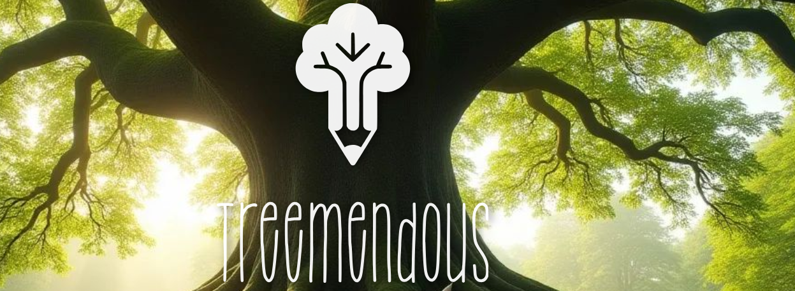

All of our products are crafted by hand.
Our staff include Ollie Smith, Noah Finnegan, Paudie Casey and Nathan O'Brien .
We get our wood the right way, from the forests near the Giant’s Grave in Dungourney.
Because it's local, we cut down on waste, help out our neighbors, and give old or fallen trees a second chance.
Every pen and pencil has a history, a connection to the land it came from, making every one unique